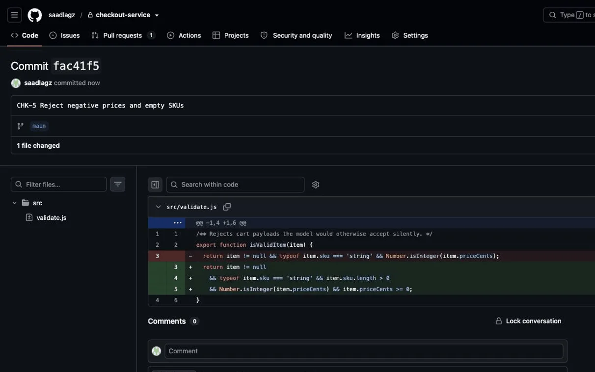
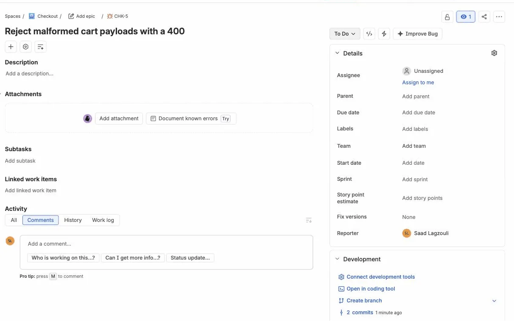
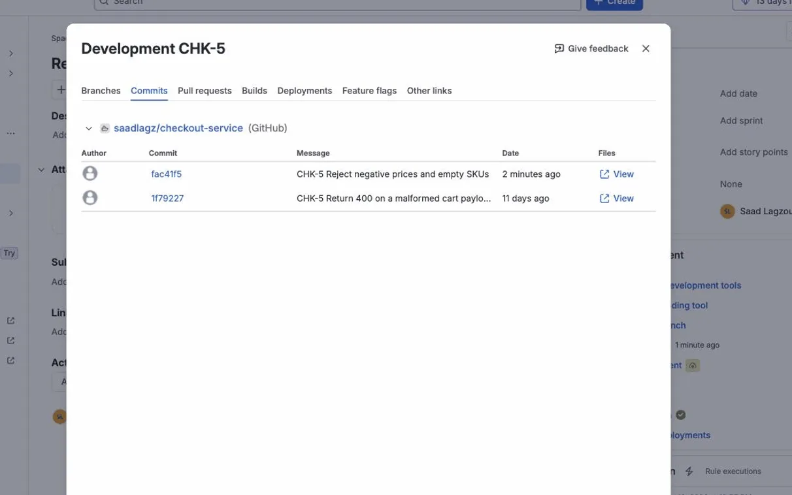
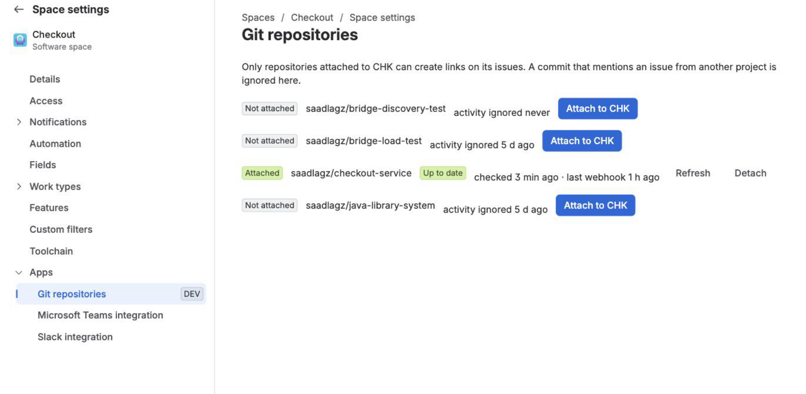
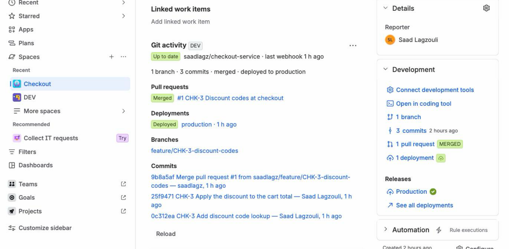
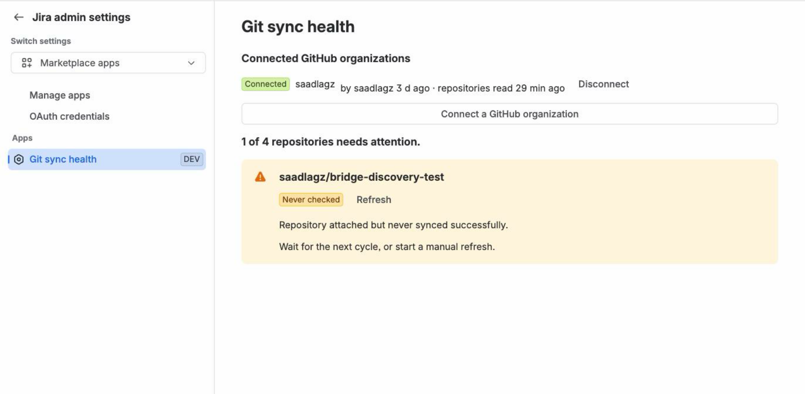

In Atlassian Marketplace review. Live demo available now.
Linkwright puts GitHub branches, commits, pull requests, reviews and deployments on every Jira issue, and tells you, repository by repository, exactly how current that information is.
A demonstration issue was set up on 19 September 2026 and left untouched. Checked again on 22 and 30 September, it still carried its branch, its three commits, its merged pull request and its production deployment — and Jira’s own JQL still returned it.
| Repository | State | Detail |
|---|---|---|
| acme/checkout-api | Up to date | Last check 40 s ago |
| acme/billing-worker | Rate limited | GitHub quota spent, resumes at 14:00 |
| acme/legacy-portal | Not authorized | The GitHub App lost access to this repository |
Recorded on a real Jira site on 30 September 2026, on issue CHK-5. Nothing staged, times as measured.



The complaint that comes back most often is not a missing feature. It is that every indicator says connected, nothing gets linked, and nothing says why.
I read 279 negative reviews of the two official connectors, one by one, before writing a line of code. Linkwright is built around that one sentence.
The cost is not really the developer’s. It is that issue status stops being a reliable picture of where the work stands — and you find out in the stand-up, or in front of a stakeholder.
Every repository shows its last webhook, its last full check, and a plain state: Up to date, Out of date, Rate limited, Failing, Not authorized or Webhook down, with the reason. One click re-reads it from GitHub.

Commits, branches, pull requests with approvals and deployments land in Jira’s native Development panel, so boards, JQL and Automation keep working exactly as they do with Atlassian’s own integration. A deployment is linked to every commit it ships, not only to the last one.

A repository only links to issues of the Jira projects it is attached to. Connecting a GitHub organization requires one of its owners, so nobody can expose private repositories inside Jira that they cannot see on GitHub themselves.

A team with three thousand repositories gets about four GitHub API requests per repository per hour. Polling does not fit in that budget, which is exactly why the connectors that rely on it fall behind.
It reaches your Jira site as it happens, over a signed webhook. Webhooks cost no GitHub API quota at all.
In branch names, commit messages and pull request titles, only for the projects that repository is attached to.
Straight into the native Development panel, so everything you already built on it keeps working.
Unchanged data costs nothing to re-check. Anything no webhook announced is reported to you, not hidden.
Linkwright runs entirely on Atlassian Forge. Your data stays in your own Jira site’s storage, there is no server of mine anywhere, and no Jira data is ever sent to GitHub. Read the security policy
Per user, per month, billed through the Atlassian Marketplace. Above ten users, the price matches the leading paid connector. Submitted to Atlassian with the listing; final once it is approved.
| Team size | Price |
|---|---|
| Up to 10 users | FreeThe whole app, not a trial |
| 11 to 100 users | $2.61per user per month |
| 101 to 250 users | $1.86per user per month |
Written here rather than discovered later, because that is the whole point of the product.
Short answers. The documentation has the long ones.
development[commits]
in JQL, board badges, Smart Commits and automatic transitions behave as they do with
Atlassian’s integration.Linkwright is built and running, and it is in Atlassian’s Marketplace review. What I want right now is simpler than a sale: to know whether this problem is real on your team, and whether you would have paid to avoid it.
If your team runs Jira and GitHub side by side, a one-line answer is enough. I can also show it to you live, on a real Jira site, in fifteen minutes. You will be able to install it from the Marketplace as soon as it is approved, free up to 10 users.
Saad Lagzouli, who builds Linkwright
Book a 15-minute demo: saad@linkwright.io